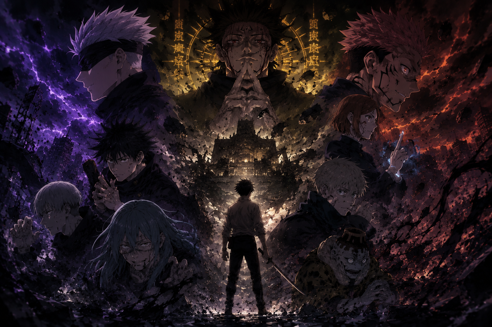

O jogo mortal entrou em sua fase mais perigosa
Após os acontecimentos explosivos da terceira temporada, JUJUTSU KAISEN oficialmente avança para a Parte 2 do Culling Game, levando a obra para um território ainda mais caótico, estratégico e imprevisível.
Diferente do início do arco, focado em introduzir jogadores, regras e sobrevivência, a nova fase muda completamente o ritmo da história.
Agora, o jogo deixou de ser apenas um massacre entre feiticeiros. Ele se tornou o palco de uma guerra muito maior.
O jogo deixa de parecer torneio e passa a revelar um plano global.
A Parte 2 aprofunda o objetivo real por trás do caos.
As consequências ficam permanentes e os personagens chegam ao limite.

O Culling Game finalmente revela seu verdadeiro objetivo
Durante boa parte do arco, muitos personagens acreditavam que o Jogo de Eliminação era apenas uma competição criada para gerar caos.
Mas conforme a história avança, fica claro que tudo faz parte de um plano gigantesco arquitetado por Kenjaku. A Parte 2 aprofunda justamente essa revelação.
O objetivo nunca foi apenas matar jogadores. O verdadeiro plano envolve uma mudança estrutural na própria humanidade.
- A fusão entre humanidade e energia amaldiçoada
- A evolução forçada dos seres humanos
- A criação de um novo mundo moldado pelo caos
Isso transforma completamente a escala da narrativa.
As regras do jogo começam a quebrar os personagens
Um dos aspectos mais interessantes dessa nova fase é como o Culling Game começa a destruir emocionalmente seus participantes.
Os personagens agora precisam lidar com escolhas impossíveis, mortes constantes, exaustão mental e a sensação de que talvez não exista forma real de vencer.
A Parte 2 trabalha muito mais a pressão psicológica do que apenas as lutas. Cada batalha parece carregar consequências permanentes.
Megumi Fushiguro ganha ainda mais importância
Se Yuji continua sendo o coração emocional da obra, Megumi se torna um dos personagens mais centrais para os eventos futuros.
A nova fase do Culling Game reforça o potencial absurdo da Técnica das Dez Sombras, o interesse crescente de Sukuna em Megumi e como o personagem está diretamente ligado aos próximos acontecimentos mais importantes da série.
A narrativa começa a deixar claro que Megumi não é apenas um coadjuvante poderoso. Ele é uma peça-chave dentro do colapso do mundo jujutsu.
As batalhas ficam ainda mais estratégicas
Uma das grandes diferenças da Parte 2 do Culling Game é a evolução das lutas.
JUJUTSU KAISEN abandona confrontos simples e passa a trabalhar estratégias extremamente técnicas, expansões de domínio complexas, regras amaldiçoadas específicas e batalhas que parecem verdadeiros jogos mentais.
Cada combate agora exige interpretação, raciocínio e atenção total aos detalhes das técnicas.
A atmosfera ficou quase apocalíptica
Visualmente, o Culling Game Parte 2 mergulha de vez em uma estética sombria e desesperadora.
As cidades destruídas, o abandono urbano e o clima constante de tensão criam uma sensação de fim do mundo. Tons escuros, ambientes silenciosos, cenários devastados e iluminação agressiva transmitem que a sociedade está desmoronando.
O caos começa a ultrapassar o Japão
Outro ponto importante da nova fase é que o conflito deixa de afetar apenas o universo interno dos feiticeiros.
As consequências do Culling Game começam a chamar atenção internacional. A história passa a sugerir que governos estrangeiros observam os eventos, a energia amaldiçoada se torna interesse global e o equilíbrio político do mundo começa a mudar.
Isso amplia absurdamente a escala da obra. JUJUTSU KAISEN deixa de ser apenas uma história sobrenatural localizada. Agora parece uma crise mundial prestes a explodir.
Kenjaku se consolida como uma das maiores ameaças do anime moderno
Enquanto Sukuna representa destruição absoluta, Kenjaku funciona como o cérebro por trás do colapso.
A Parte 2 do Culling Game aprofunda muito mais sua filosofia, seus experimentos e sua visão distorcida sobre evolução humana.
O personagem deixa de parecer apenas um vilão manipulador. Ele se transforma em alguém disposto a remodelar completamente a existência humana, e isso torna a ameaça ainda mais assustadora.
O MAPPA continua elevando o nível visual
A adaptação do Culling Game também virou assunto pela evolução constante da produção do MAPPA.
Mesmo nas cenas mais caóticas, o anime mantém direção extremamente dinâmica, coreografias violentas, uso cinematográfico de câmera e efeitos visuais muito mais pesados do que nas primeiras temporadas.
A Parte 2 promete elevar ainda mais isso, principalmente nos confrontos mais aguardados pelos leitores do mangá.
O sentimento de “fim inevitável” domina a obra
Uma das características mais marcantes dessa fase é a sensação constante de que os personagens estão lutando contra algo impossível de parar.
Diferente de outros shonens onde a esperança sempre domina, JUJUTSU KAISEN trabalha frequentemente com fatalismo, medo, trauma e inevitabilidade.
O Culling Game mudou completamente a série
- A obra se afastou do anime escolar tradicional
- A narrativa passou a focar sobrevivência e sacrifício
- O colapso social virou parte central do arco
- A perda da humanidade ficou mais importante que a vitória
O hype da continuação está gigantesco
Desde o anúncio oficial da continuação, a comunidade começou a discutir intensamente os próximos confrontos, as revelações envolvendo Sukuna, o destino de Megumi e os momentos mais impactantes que ainda serão adaptados.
A expectativa é enorme porque a Parte 2 do Culling Game adapta alguns dos acontecimentos mais brutais e comentados de todo o mangá.
Onde assistir
As temporadas de JUJUTSU KAISEN estão disponíveis oficialmente na Crunchyroll, que também deve transmitir os novos episódios simultaneamente com o Japão após a estreia da continuação.
Conclusão
A Parte 2 do Culling Game representa o momento em que JUJUTSU KAISEN abandona qualquer sensação de estabilidade.
O jogo agora virou guerra. Os personagens estão no limite. E o mundo parece caminhar diretamente para o desastre.
Mais do que nunca, a obra transmite uma sensação constante de tensão e colapso. Porque no Culling Game, ninguém realmente parece preparado para o que está vindo.